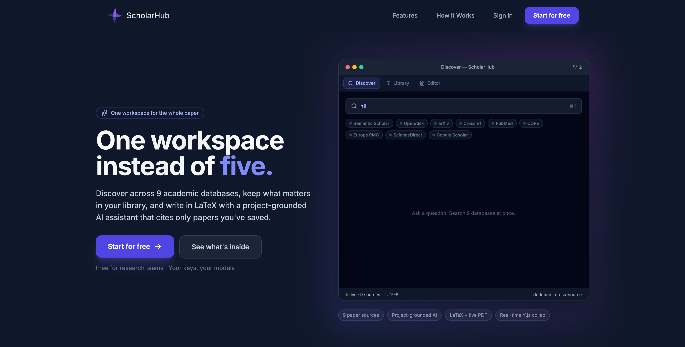
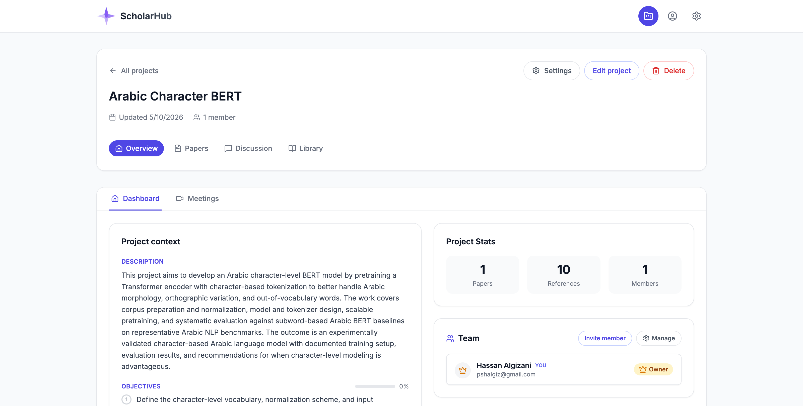
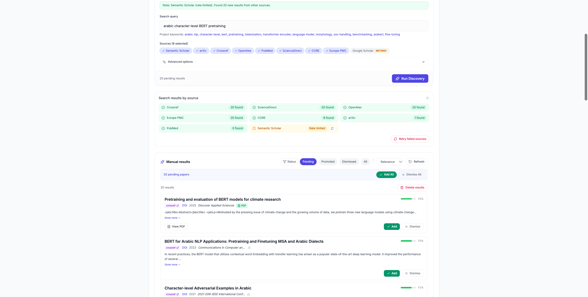
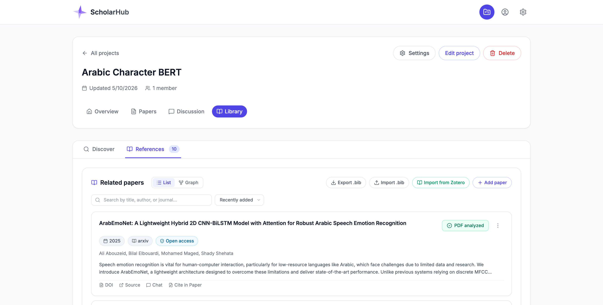
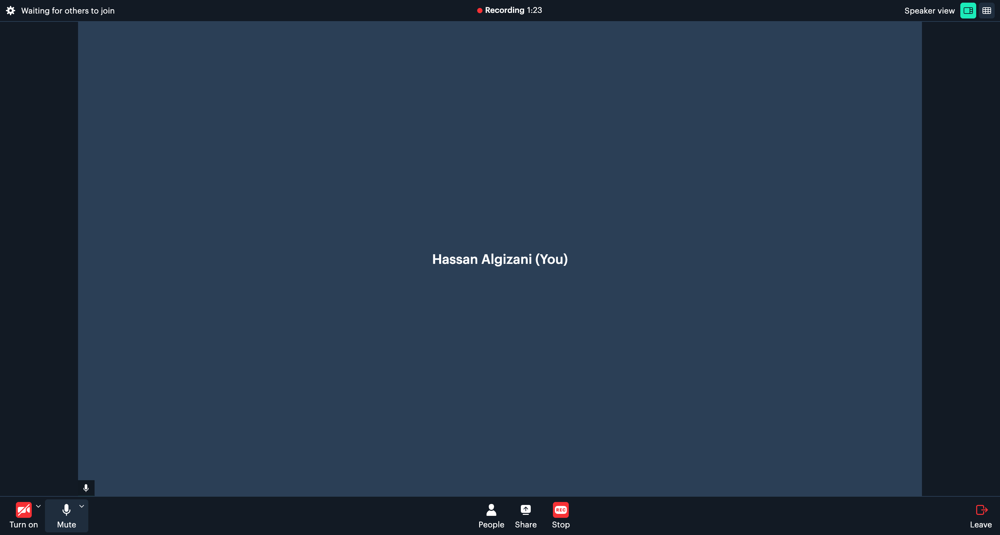
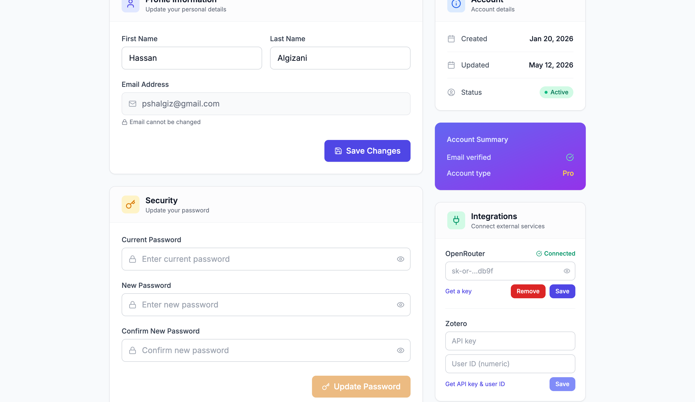
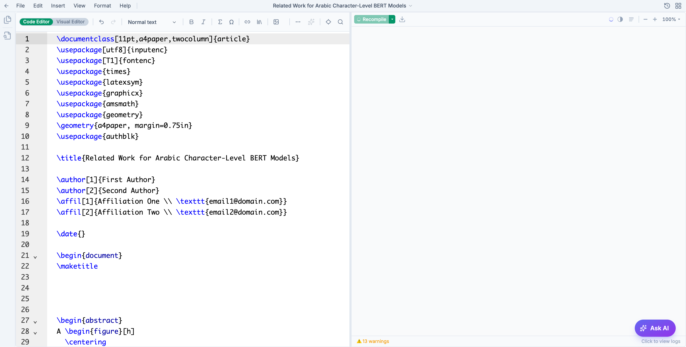
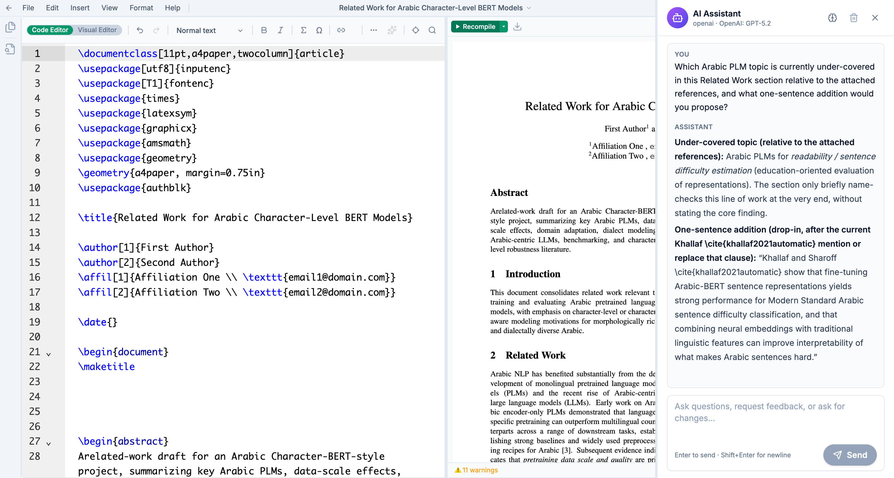
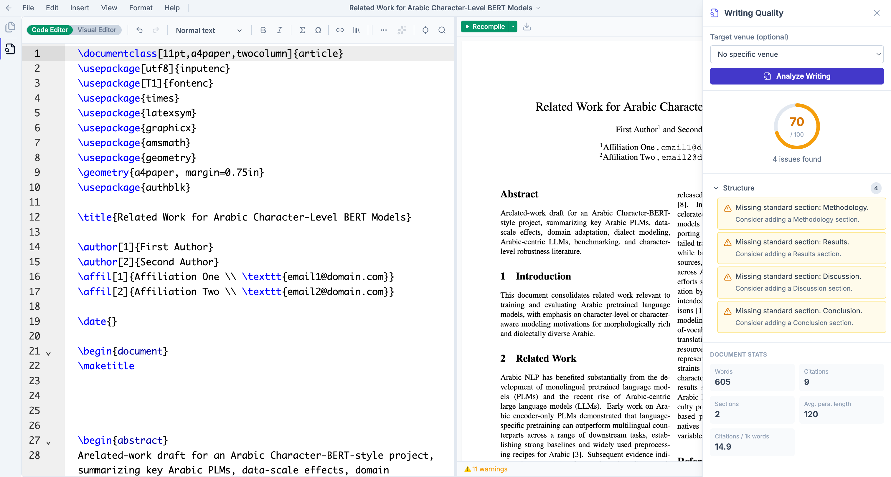

A unified workspace for academic research. Discover, write, collaborate, and let AI help — without leaving the page.
Live at
scholarhub.space
Live deployment, May 2026.
Built by
Hassan Algizani
MX Student · ID 202403940
Supervised by
Dr. Irfan Ahmad
with Mr. Majed Alshaibani
CHAPTER 01 · INTRODUCTION
Introduction.
The problem this project addresses, the contributions it makes, and the scope of what was actually built and evaluated — before we walk through any feature or any architecture diagram.
ScholarHub · KFUPM MX Final Project02 / 35
The Problem03 / 35
Writing a research paper today is annoying.
A researcher writing one paper opens at least five different apps: a search engine to find papers, a reference manager to save them, a writing tool to draft, a chat app to coordinate with co-authors, and an AI assistant to help phrase things. None of these talk to each other.
Apps Per Paper
5+
Overleaf, Zotero, Google Scholar, ChatGPT, Slack — copy/paste between them all day.
AI Invents Citations
76%
Average rate at which the best 2026 AI models invent fake citations when asked to write academic text (measured over 30 prompts × 4 frontier models).
Productivity Tax
~3×
Cross-app tasks take roughly three times longer than the same work in an integrated workspace.
Researchers want to focus on ideas, not on copying citation keys between five browser tabs. And when AI invents fake references that look real, the time saved by AI is lost to manual verification. There's room for one workspace that does all of this in one place — and an AI that doesn't lie.
Five technical contributions, deployed live at scholarhub.space, evaluated through two empirical studies. The boundaries are stated explicitly so the evaluation is rigorous within a graduate-project envelope.
DELIVERED
C1. Unified research workspace
Discovery + library + discussion + collaborative LaTeX + AI + meetings, in one web app.
C2. Library-grounded AI with post-filter
Tool-orchestrated agent + a server-side citation filter that rejects every non-library citation key.
C3. Multi-source paper discovery
Nine open scientific APIs queried in parallel, deduplicated, ranked, presented as one list.
C4. Real-time CRDT LaTeX editor
Y.js + Hocuspocus, multi-file projects, live PDF preview, document history with restore.
Two quantitative studies are the contribution; a controlled human-subjects study is recorded as future work.
Open scientific APIs only
Subscription databases (Web of Science, Scopus) require institutional contracts — deferred to productization.
Cloud AI providers by design
OpenAI direct + OpenRouter (31 models). Architecture supports local inference; air-gapped deployment is a productization concern.
English-first, multilingual-ready
UI, citations, and templates validated in English. Arabic / RTL support is a productization milestone.
SCOPE PRINCIPLE
Scope was chosen to make every claim measurable within a graduate-project envelope — not to maximise feature count.
Five contributions · deployed at scholarhub.space · boundaries stated explicitly04 / 35
CHAPTER 02 · WORKSPACE & DISCOVERY
Workspace & Discovery.
How a researcher gets started with ScholarHub: meeting the product, an end-to-end weekly workflow, creating projects with collaborators, finding papers across nine academic databases, and organising what you find into a project library.
ScholarHub · KFUPM MX Final Project05 / 35
The Solution06 / 35
Introducing
One workspace instead of five.
ScholarHub is a web application that combines everything a researcher needs into one browser tab. Find papers from nine academic databases. Save them to your library. Discuss with your team. Draft your paper. Ask an AI for help — and the AI only cites papers you've actually saved.
No installation. No copy-paste between apps. No fabricated citations.
Open scholarhub.space in any browser. Sign in with Google or email. Start a project. That's the whole onboarding.

Live deployment · works in any modern browser · multi-user from day one06 / 35
A Day Using ScholarHub07 / 35
From an idea to a submission-ready paper.
A graduate student starts a new paper on Monday. By Friday, they want a draft ready for the supervisor's feedback. Here is how ScholarHub fits into that week.
MON · 01
Start a project
Title, keywords, objectives, co-authors. Everything in this paper lives inside the project.
MON · 02
Discover papers
Search nine academic databases at once. Save anything relevant in one click.
TUE · 03
Invite the team
Add co-authors as Editors or Viewers. Discuss in project channels, tag the AI.
WED-THU · 04
Write together
LaTeX editor with live PDF. Multiple authors edit at the same time, conflict-free.
THU · 05
Get AI help — safely
"Add three citations to this paragraph." The AI uses only papers in your library.
FRI · 06
Submit-ready PDF
Pick a template (IEEE, ACM, NeurIPS, …). One click builds a venue-ready .zip.
Every step happens in the same browser tab. No copy/paste between apps. The AI sees the project context throughout. Your supervisor sees the latest draft live, not yesterday's email attachment.
Same project, Monday to Friday — one URL, one workspace07 / 35
Workspace & Discovery · Projects & Team08 / 35
When you start & invite
A project is a team space.
Every paper starts as a project — a container with its own library, its own discussion channels, its own drafts. You invite co-authors by email, give them a role, and they have access immediately.
THREE ROLES · PLUS THE OWNER BADGE
Admin
Full control. Invite, remove, change roles, project settings.
Editor
Co-authors. Write, discuss, run AI, manage references.
Viewer
Supervisor or reader. Sees everything, edits nothing.
The project creator gets the Owner badge — an Admin who can't be removed.
When
You start a new paper and want to bring co-authors in.
You do
Create the project → click Invite member → type their email → pick a role.
You get
A shared workspace where every team member sees the same library, drafts, and conversations.

Project dashboard · team panel · recent activity feed · per-project AI settings08 / 35
Workspace & Discovery · Discover09 / 35
When you need a paper
Nine databases. One search box.
Instead of opening Google Scholar, then arXiv, then PubMed, then OpenAlex and copying titles between them — type your query once. ScholarHub queries all nine in parallel, removes duplicates across sources, and ranks the results.
Semantic Scholar
OpenAlex
arXiv
CrossRef
PubMed
CORE
Europe PMC
ScienceDirect
Google Scholar
When
You want to know what's already been written on a topic.
You do
Type a question. Click Run.
You get
A ranked, de-duplicated list with one-click "Add to library" buttons.

Roughly 3× faster than searching one source at a time · deduplicated & ranked across all sources09 / 35
Workspace & Discovery · Library10 / 35

When you collect papers
Your project's own library.
Every paper you save lives inside the project. Drop a BibTeX file, drag in PDFs, or save discoveries directly. The full text gets indexed so the AI can quote from it, and every reference is one click from the paper you're writing.
When
You've found relevant papers and want to keep them organized.
You do
"Add to library" from discovery, import BibTeX, or sync from Zotero.
You get
A searchable per-project library that's the AI's source of truth for citations.
No more "where did I save that paper?" — the answer is always: inside this project.
BibTeX import/export · Zotero sync · full-text indexing for AI search10 / 35
CHAPTER 03 · COLLABORATE
Collaborate.
How co-authors work together inside a project: threaded discussions with an AI participant, live video meetings with automatic transcription, and the integrations that connect ScholarHub to tools the user already has — Zotero for references and OpenRouter for AI models.
ScholarHub · KFUPM MX Final Project11 / 35
Collaborate · Discussion12 / 35
When you talk to your team
Channels for research talk.
Each project has its own discussion channels — threaded conversations alongside the papers and drafts. Tag the AI assistant in any channel to summarize a paper, suggest related work, or draft a paragraph using the project library.
When
You want to discuss a paper with your co-author without switching to Slack.
You do
Open the Discussion tab. Pick a channel. Type. Optionally tag the AI.
You get
A threaded conversation the AI can search, with project context built in.
Conversations stay attached to the paper they're about — no more searching Slack for "what did we decide about that figure?"
Threaded channels · AI participant · project-grounded responses12 / 35
Collaborate · Sync Space13 / 35
When you meet live
Video calls that take notes.
Start a video meeting from any project. The call runs in the browser. When it ends, the recording is transcribed automatically, and the AI summarizes it into action items, decisions, and open questions — attached to the project for later.
When
You and your co-author need to discuss the paper in real time.
You do
Click "Start a call". Co-authors get a link, join in their browser.
You get
A searchable transcript and AI-generated meeting notes attached to the project.
The AI can quote the transcript later — "what did we decide about that figure in Tuesday's call?" gets a real answer.

Video powered by Daily.co · AI transcription · notes attached to the project13 / 35
Collaborate · Integrations14 / 35
Plug ScholarHub into what you already use.
ScholarHub works on its own — but it also connects to the two tools researchers most often already have: Zotero for an existing reference library, and OpenRouter for direct access to 31 frontier AI models. Both are configured once in your profile and apply across every project.

REFERENCES · ZOTERO
Bring your existing library
Already have years of Zotero collections? Paste your Zotero API key and user ID in profile → ScholarHub can sync your collections into any project library with one click. No migration headache.
AI MODELS · OPENROUTER
31 AI models, one key
OpenRouter is a gateway to every major AI provider — OpenAI, Anthropic, Google, Meta, DeepSeek, Mistral, and others. The user pastes one key in their profile and picks which model powers the AI assistant per project. Billing remains with the provider; ScholarHub stores the key encrypted at rest and never proxies the request through its own billing.
BYOK · PER-USER API KEYS
User-supplied credentials
Integration credentials are stored encrypted in the user's account record (Fernet symmetric encryption with an environment-derived key). Removing a credential is a single profile action. This supports the bring-your-own-key tier described in the productization section.
The core writing surface: a real-time collaborative LaTeX editor with live PDF, an AI assistant grounded in the project library, 22 venue templates, a one-click submission package builder, and a writing-quality analyzer that scores the draft before the supervisor does.
ScholarHub · KFUPM MX Final Project15 / 35
Write & Polish · Editor16 / 35
When you write
LaTeX editor with live PDF.
Type LaTeX on the left, see the PDF rebuild on the right. Multiple authors can edit the same file at the same time — you see your co-author's cursor moving while you type, just like Google Docs. No merge conflicts, ever.
When
You're drafting your paper — alone or with co-authors.
You do
Type. Saves happen automatically. Click Recompile to refresh the PDF.
You get
Live PDF preview, syntax highlighting, autocompletion, and conflict-free real-time co-editing.
Click a spot in the PDF, the editor jumps there. Multi-file projects work out of the box. Document history lets you restore any prior version.

Live PDF · multi-author · multi-file · SyncTeX · full document history16 / 35
Write & Polish · AI Assistant17 / 35

When you need help — safely
An AI that doesn't lie.
Open the AI sidebar inside the editor. Ask it to improve a paragraph, add citations, or explain a concept. Every citation it produces is checked against your project library — if the AI tries to invent a fake reference, the system rejects it before you see it.
When
You're stuck on a paragraph or want help finding the right citation.
You do
Type a request (e.g. "add three relevant citations to this paragraph").
You get
A response where every citation is a real paper that you've actually saved.
76% fake without grounding → 0% in your final draft. Measured. Verified.
The differentiator — how the filter works is on slide 2817 / 35
Write & Polish · Templates & Submission18 / 35
Target a venue. Get a submission-ready package.
Pick from 22 pre-built venue templates — IEEE, ACM, NeurIPS, Springer LNCS, ICML, ICLR, CVPR, AAAI, ACL, Nature, PLOS ONE, and more. One click swaps in the right preamble. When you're ready to submit, the Submission Package Builder validates against the venue's rules and assembles a publisher-ready .zip.
Pick venue → Validate → Build. Rewrites the document class, attaches the bibliography style, bundles figures and class files, produces a venue-ready .zip.
No more "wait, what's the IEEE template again?" — one click and it's done18 / 35
Write & Polish · Writing Quality19 / 35

When you self-review
Score your draft before your supervisor does.
Before sending the paper out, run the Writing Quality analyzer. It scores the document out of 100, flags missing sections (no Conclusion? No Methodology?), reports citation density, and applies venue-specific structural rules.
When
You think the draft is done — but want a second pair of eyes.
You do
Click "Writing quality analysis". Optionally pick a target venue.
You get
A score, a list of fixable issues, and document stats — in five seconds.
Cheaper than a supervisor's coffee chat. Not a substitute — but a useful pre-flight check.
Structural rules · citation density · venue-specific checks19 / 35
CHAPTER 05 · SYSTEM ARCHITECTURE
System Architecture.
Four tiers, packaged in Docker, served from one URL. We start with the integrated picture, then drill into each tier: the browser, the backend, the live-collaboration server, the data layer, and the external services we call on the user's behalf.
ScholarHub · KFUPM MX Final Project20 / 35
System Architecture · The Big Picture21 / 35
Putting it all together.
All four tiers, every service, with the data flow for the three principal user actions.
4 tiers · 7 services · Docker Compose · one server · scholarhub.space21 / 35
Tier 01 · Browser (Frontend)22 / 35
What you see and click.
The frontend is a single React 18 application served as static assets — it loads once, then behaves like a single app rather than a website. Below are the principal surfaces a user touches.
PAGE 01
Landing & Auth
Marketing landing page, sign-in, sign-up, Google OAuth, password reset. The first thing a new user sees.
PAGE 02
Projects list & Overview
All your projects in one place; per-project dashboard with description, objectives, members, activity feed.
PAGE 03
Library & Discovery
The Discover tab (9-source search) and the References tab (your saved papers with full-text indexing).
PAGE 04
Discussion channels
Per-project threaded channels with the AI assistant as a participant.
PAGE 05
LaTeX editor
The most complex surface: CodeMirror 6, file tree, live PDF, AI sidebar, history, templates, format toolbar.
PAGE 06
Sync Space & Profile
Video meetings inside the project; profile with integrations (Zotero, OpenRouter), security, account settings.
React 18
Framework
198
Components
58k
Lines of TypeScript
CodeMirror 6
Editor engine
Vite build · strict TypeScript · React Query for server state · Y.js client for live edits22 / 35
Tier 02 · Backend (FastAPI / Python)23 / 35
The brain of the system.
Every request from the browser lands here. The backend exposes 31 REST/SSE routers and a set of business-logic services. The eight that matter most are below; the heart of the system is the AI Orchestrator with its post-generation citation filter.
SERVICE 01
Auth & Accounts
JWT cookies, Google OAuth, password reset, profile, encrypted integration keys.
SERVICE 02
Projects & Teams
Project CRUD, member invitations, roles (Admin/Editor/Viewer), activity feeds, per-project AI settings.
Nine source adapters queried in parallel, union-find deduplication by DOI → arXiv → title, ranking.
SERVICE 05 · THE DIFFERENTIATOR
AI Orchestrator + Citation Filter
30 registered tools, multi-model (OpenAI + OpenRouter). Every \cite{key} validated against the project library before the response leaves the server.
SERVICE 06
LaTeX Compiler
pdflatex / xelatex / lualatex on the server, with SyncTeX, multi-file projects, template engine, error parsing.
SERVICE 07
Discussion & Notifications
Channels, threads, comments, the AI participant in discussions, project notifications, activity tracking.
SERVICE 08
Sync Space
Daily.co room creation, per-call tokens, transcription pipeline, AI meeting-note generation.
FastAPI
Framework
31
API routers
189
Python modules
60k
Lines of Python
SSE streaming · async I/O · Pydantic schemas · SQLAlchemy + Alembic for the DB layer23 / 35
Tier 02b · Collaboration Server (Node.js)24 / 35
The part that keeps everyone in sync.
A dedicated WebSocket server that hosts one room per LaTeX document. Each room owns a Y.js CRDT — a data structure designed so that any two clients receiving the same set of edits end up with the same document, no matter what order the edits arrive in. No central serialization point, no merge conflicts.
THE LIFE OF A KEYSTROKE
01
Type in your browser
CodeMirror applies the change locally — instant visual feedback, zero latency.
02
y-codemirror.next emits a Y.js operation
The editor change is translated into a CRDT operation (an insert or delete on a position-stable index).
03
Hocuspocus broadcasts via WebSocket
All clients in the same document's room receive the op and apply it. CRDT guarantees convergence.
Live cursor positions don't pollute document history — they're out-of-band metadata.
05
Debounced snapshot to PostgreSQL
A few seconds after activity stops, the full Y.Doc state is persisted. The save IS the keystroke.
WHY CRDT
Operational Transformation needs a central server to resolve conflicts. CRDTs converge on their own. No "you have new changes, reload?" dialogs.
MULTI-FILE
One Y.Text per file in a paper. Each file has its own undo manager. Switch files without losing history.
DOCUMENT HISTORY
Snapshots persisted on idle. Labelled versions, restore, side-by-side compare — powered by the same Y.Doc state.
Node.js
Runtime
Hocuspocus
CRDT server
Y.js
YATA algorithm
WSS
WebSocket over TLS
Same architecture Google Docs / Notion / Linear use for live collaboration24 / 35
Tier 03 · Data (PostgreSQL + Redis)25 / 35
Where everything lives.
A single PostgreSQL 15 database with the pgvector extension is the source of truth for everything: users, projects, references, papers, discussions, meetings, snapshots, and the dense embeddings used for semantic search. Redis is the high-speed cache for sessions and cross-process collaboration messaging.
Container with members, objectives, keywords, AI settings.
Reference
A library entry (title, authors, year, DOI, abstract, full text).
ResearchPaper
A draft with LaTeX content, multi-file map, CRDT state.
DocumentChunk
Text chunks with pgvector embeddings for semantic search.
DiscussionChannel + Message
Per-project threaded conversations.
MeetingSession + Transcript
Sync Space calls and their AI-summarized notes.
Snapshot + Annotation
Document history versions; inline paper annotations.
SCHEMA EVOLUTION
72 Alembic migrations
Every schema change is a versioned migration. Production database evolves with one command: alembic upgrade head.
PGVECTOR · SEMANTIC SEARCH
1536-dim embeddings
Every paper's full text is embedded with OpenAI's text-embedding-3-small. Library search uses cosine distance — "find papers about X" works even when X isn't in any title.
REDIS · CACHE LAYER
Sessions · pub/sub · rate limits
Session lookup is microsecond-fast. Cross-process messaging keeps the collab server consistent. Per-user API rate limits live here.
PostgreSQL 15
Primary store
pgvector
Vector extension
Redis 7
Cache + pub/sub
28 tables
72 migrations
Single PostgreSQL instance · volume-mounted in Docker · daily backup recommended25 / 35
Tier 04 · External Services26 / 35
What we call on your behalf.
The backend is the only thing that talks to the outside world — your browser never makes a request to OpenAI or Semantic Scholar directly. This keeps your API keys on the server and lets us cache, batch, and rate-limit requests cleanly.
AI PROVIDERS
OpenAI direct + OpenRouter (31 models)
GPT-5 family, Claude 4.5 family, Gemini 3, DeepSeek R1, Mistral, Llama, plus a dozen niche models. Per-project model selection. Users with their own keys pay providers directly.
Daily.co provides the WebRTC infrastructure for live meetings; per-call tokens scoped to project membership. Recording feeds into Whisper for transcription.
USER LIBRARIES
Zotero
User-supplied API key + numeric user ID. Backend pulls collections, maps them into the project library, and indexes them for AI search.
9 ACADEMIC DATABASES
Free / open scientific APIs
Semantic Scholar
200M+ papers, the primary general-purpose source.
OpenAlex
Open replacement for Microsoft Academic Graph.
arXiv
Preprints in CS, math, physics, stats.
CrossRef
DOI registry — the canonical metadata source.
PubMed
Biomedical literature from the NIH.
CORE
Open-access full-text aggregator.
Europe PMC
European biomedical and life-science papers.
ScienceDirect
Elsevier metadata search (open metadata only).
Google Scholar
Metered fallback for citation counts and broad coverage.
All called by the backend · your API keys never leave the server · rate-limited per source26 / 35
CHAPTER 06 · EVALUATION
Evaluation.
Two empirical studies measure the system as built. First, the citation faithfulness study quantifies the central technical claim: that the post-generation library-key filter eliminates fabricated citations from the user-visible response. Second, the search performance study measures end-to-end latency against the live deployment.
ScholarHub · KFUPM MX Final Project27 / 35
The Big Idea28 / 35
How we made the AI stop lying about citations.
This is the single most important thing ScholarHub does differently. Every other research workspace either has no AI or has an AI that invents references. We made it impossible for the AI to put a fake citation in your final draft.
STEP 01 · PROMPT
Tell the AI what's allowed.
The AI gets your project library as context. The system prompt explicitly says: "cite only from this list." Most AIs follow this most of the time.
STEP 02 · REALITY
But the AI still slips.
In our tests, the four best 2026 AI models cited outside the library 5–21% of the time, even when explicitly told not to. Saying "please" is not enough.
STEP 03 · THE FILTER
We check every citation.
Before the AI's response reaches you, ScholarHub looks at every citation it produced. Anything not in your library is replaced with a visible [MISSING] marker.
THE RESULT
A fabricated citation cannot reach your final draft.
In production at scholarhub.space — strict mode by default.
0%
Fabricated in final response
Validated in production: 4 of 4 frontier models reach 0% empirically (329 library-key citations, 0 fabricated) · numbers on next slide28 / 35
Proof · The Numbers29 / 35
76% → 14% → 0% — measured.
We ran 30 writing prompts through the four most capable 2026 AI models, twice — once with no library, once with the project library + ScholarHub's filter. 240 model calls in total, 1,135 citations verified against external databases.
Model
Setup
Citations
Fake %
From library %
After our filter
GPT-5 Mini
No grounding
60
68.3%
10.0%
—
GPT-5 Mini
With ScholarHub
137
5.1%
98.5%
0.0%
Claude Haiku 4.5
No grounding
111
68.5%
9.9%
—
Claude Haiku 4.5
With ScholarHub
172
20.9%
82.6%
0.0%
Gemini 3 Flash
No grounding
156
86.5%
7.1%
—
Gemini 3 Flash
With ScholarHub
204
15.7%
88.2%
0.0%
DeepSeek R1
No grounding
139
82.0%
8.6%
—
DeepSeek R1
With ScholarHub
156
16.0%
87.8%
0.0%
Average (no grounding)
—
466
76.3%
8.9%
—
Average (with ScholarHub)
—
669
14.4%
89.3%
0.0%
After our filter measures only \cite{key} citations that would reach the user (329 across the benchmark). Full bibliography entries the model writes as prose are discarded by the production filter before the user sees them. Zero fabrications across all 329.
Benchmark is open and reproducible · scripts/study1_runner.py29 / 35
Proof · The Speed30 / 35
Searching all nine databases is faster than searching one.
Asking one database at a time, you wait for each in turn — total time is the sum. ScholarHub asks all of them at once, so the total time is just the slowest one. The difference is roughly three times faster in practice.
What's being measured
Median time
Worst case (95%)
Just loading the front page
109 ms
152 ms
Checking the backend is healthy
111 ms
130 ms
Asking arXiv alone
118 ms
1018 ms
Asking OpenAlex alone
685 ms
1049 ms
Asking CrossRef alone
773 ms
1358 ms
Asking all three at once (ScholarHub)
1170 ms
1740 ms
All times measured from a normal home internet connection, 20 samples each.
Speedup vs. one-at-a-time
2.9×
Total wait bounded by the slowest source, not the sum of all nine sources.
The pipeline
Search → Rank → Present.
All nine databases queried in parallel. Results merged, deduplicated by DOI→arXiv→title, then ranked and shown as one combined list.
Measured against scholarhub.space, May 2026 · scripts/study2_perf_bench.py30 / 35
CHAPTER 07 · CONCLUSION
Conclusion.
The honest limitations of the work as it stands, the future work that follows from those limitations, the productization path that takes ScholarHub from a graduate project to an institutional research workspace, and acknowledgements.
ScholarHub · KFUPM MX Final Project31 / 35
Limitations & Threats to Validity32 / 35
What this project does not prove.
Every empirical claim in this work has a boundary. Stating them up front strengthens the contribution because the parts that are claimed are then claimed precisely.
L1. No human-subjects user study
The evaluation is a systems evaluation. We measure model behavior and network latency, not how a real researcher's workflow improves. A controlled task-completion study with the KFUPM cohort is the natural next step.
L2. Study 1 sample size
30 prompts × 4 models × 2 conditions = 240 model calls, 1,135 verified citations. Enough to expose the structural effect of grounding (76% → 14%) and the post-filter (0%); a 100-prompt run would tighten per-model confidence intervals.
L3. Citation existence, not relevance
The filter guarantees that emitted citation keys correspond to real library entries. It does not guarantee the cited paper actually supports the claim. Relevance evaluation is a research direction in itself.
L4. Library-aligned prompts
The Study 1 library was deliberately aligned with the prompt topics so that grounded mode had relevant citations available. With a misaligned library, models may refuse to cite (Anthropic) or fabricate (others).
L5. External-API dependency
Discovery latency depends on the availability and rate limits of Semantic Scholar, OpenAlex, and the seven other sources. We mitigate (rate-limit handling, parallel fan-out) but cannot eliminate external dependence.
L6. Single-tenant deployment
The live system is one server, one PostgreSQL database, one set of services. Multi-tenancy with row-level security and per-tenant subdomains is part of the productization plan.
Limitations stated explicitly · chapter 7 of the report covers each in detail32 / 35
Future Work & Productization33 / 35
From graduate project to institutional product.
The roadmap is structured as a productization plan rather than a generic feature list — each item maps to one of the limitations above and to a specific architectural change documented in the report.
F1 · NEAR-TERM · addresses L1, L2
Stopwatch user study + 100-prompt benchmark
Controlled task-completion study with KFUPM graduate cohort. Scale Study 1 from 30 to 100 prompts per cell for tighter per-model confidence intervals (approximately USD 4 in API cost).
F2 · CORE PRODUCT · addresses L3
AI code interpreter for research data
Sandboxed Python/R kernel attached to each chat session. AI runs statistics on uploaded data; the methodology paragraph cites the actual numbers it computed.
F3 · INSTITUTIONAL · addresses L6
Multi-tenancy + university SSO
Row-level security per tenant in PostgreSQL. SAML 2.0 / OpenID Connect for university IdPs. Per-tenant subdomains, wildcard TLS, configurable data residency.
F4 · COMPLIANCE
IRB / HIPAA / GDPR profiles
Per-project compliance flags. Audit logs, retention schedules, data-subject rights endpoints. Self-hostable enterprise edition with offline-capable local LLMs.
F5 · REGIONAL
Arabic and right-to-left support
Arabic-aware editor, citation formatting, paper discovery. Underserved by existing tools, naturally aligned with the KFUPM context.
PRODUCTIZATION MODEL
Free / Pro / BYOK + Institutional
Free tier for evaluation, Pro at USD 15/mo for active researchers, BYOK at USD 0 + provider costs, Institutional negotiated. The economic model that funds the roadmap above.
Each item maps to a specific limitation and a specific architectural change in chapter 8 of the report33 / 35
Acknowledgements34 / 35
Who supervised this work.
Designed, built, and deployed solo over the MX final-project year, under the supervision of the KFUPM ICS faculty. Thanks to everyone listed below for a year of feedback and patience, and to the early testers who shaped the product.
Builder · Designer · Author
Hassan Algizani
KFUPM MX Master's Programme · ID 202403940
Product design, full-stack engineering (frontend, backend, collaboration server), deployment, the two empirical studies, and the final report.
Supervisor
Dr. Irfan Ahmad
Department of Information & Computer Science, KFUPM
Project supervision, technical direction, evaluation methodology, weekly reviews throughout the year.
Co-Supervisor
Mr. Majed Alshaibani
Department of Information & Computer Science, KFUPM
Co-supervision and additional review of the deployment and the AI subsystem.
With thanks also to: the Department of Information & Computer Science at KFUPM for the MX programme structure that made this work possible; the open-source maintainers behind FastAPI, React, CodeMirror, Y.js, Hocuspocus, pgvector, and the nine academic-search APIs that ScholarHub depends on; and the early users who tested the system and reported the bugs that made the May 2026 deployment what it is.
Final project for the KFUPM MX Master's in Artificial Intelligence · 202634 / 35
ScholarHub · KFUPM MX Master's Programme · 2026
Thank you.
A unified workspace for the whole paper — from the first search to the submission-ready PDF, with an AI that cites only what you have actually saved.